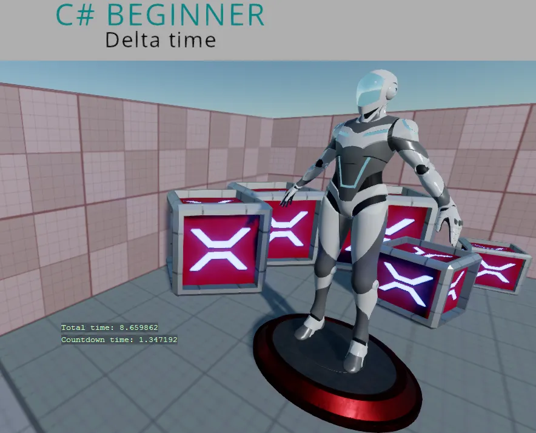

Delta Time
You can find this sample in the tutorial project: Menu → Delta Time
Explanation
This C# Beginner tutorial covers the retrieval and usage of delta time.
A game tries to update itself as often as possible. The amount of times it updates in a single second is called 'Frames Per Second' or shortened to 'FPS'.
If we wanted to update a timer value, we would need a value that takes into account what the current amount of frames per second is. That is what delta time is used for. So whether your game runs 30 FPS or 120 FPS: you always want to have the same time scale.

Code
using Stride.Core.Mathematics;
using Stride.Engine;
namespace CSharpBeginner.Code
{
/// <summary>
/// DeltaTime is used to calculate frame independent values.
/// DeltaTime can also be used for creating Timers.
/// <para>
/// https://doc.stride3d.net/latest/en/tutorials/csharpbeginner/delta-time.html
/// </para>
/// </summary>
public class DeltaTimeDemo : SyncScript
{
private float rotationSpeed = 0.6f;
// In this variable we keep track of the total time the game runs
private float totalTime = 0;
// We use these variable for creating a simple countdown timer
private float countdownStartTime = 5.0f;
private float countdownTime = 0;
public override void Start()
{
// We start the countdown timer at the initial countdown time of 5 seconds
countdownTime = countdownStartTime;
}
public override void Update()
{
/// We can access Delta time through the static 'Game' object.
var deltaTime = (float)Game.UpdateTime.Elapsed.TotalSeconds;
// We update the total time
totalTime += deltaTime;
// Since we have a countdown timer, we subtract the delta time from the count down time
countdownTime -= deltaTime;
// If the repeatTimer, reaches 0, we reset the countdownTime back to the count down start time
if (countdownTime < 0)
{
countdownTime = countdownStartTime;
rotationSpeed *= -1;
}
Entity.Transform.Rotation *= Quaternion.RotationY(deltaTime * rotationSpeed);
// We display the total time and the countdown time on screen
DebugText.Print("Total time: " + totalTime, new Int2(480, 540));
DebugText.Print("Countdown time: " + countdownTime, new Int2(480, 560));
}
}
}